Here's everything I released in 2024, the year of chaos.
I made a short film about freedom.
I launched the dreamberd vision pro.
I wrote 236 posts for my wikiblogarden, which got reborn as the wikiblogardenite.
I started a gallery.
I made 32 podcast updates for my supporters.
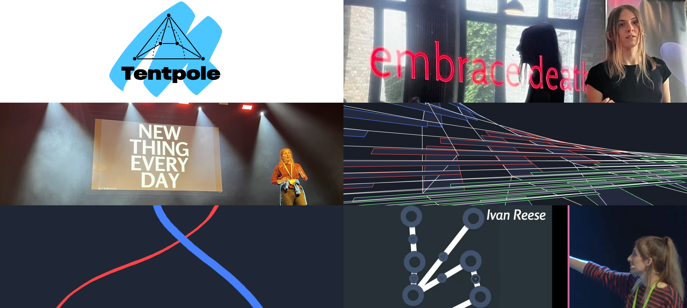I was interviewed on devtools FM.
I made 36 experiments in my tadi lab.
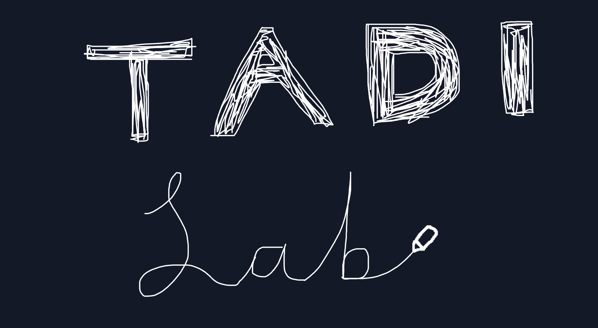We built autocomplete for canvas at tldraw and I made a video demo of it.
I gave a talk about autocomplete for canvas in London.
I gave a talk about make real in London.
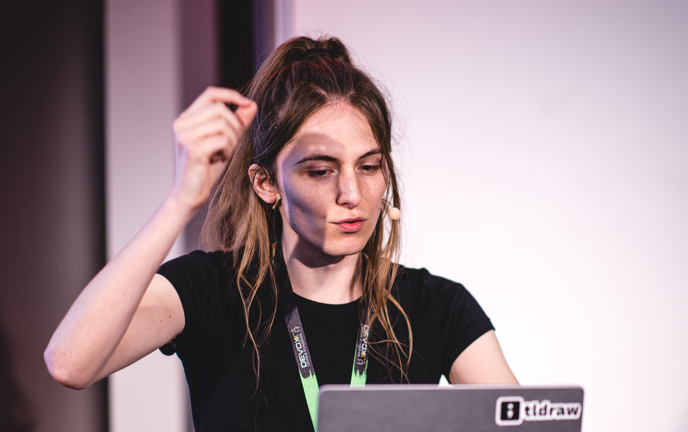I appeared on 4 episodes of the future of coding podcast.
I made a video adaptation of a podcast episode.
I made a silly game about drawing fish.
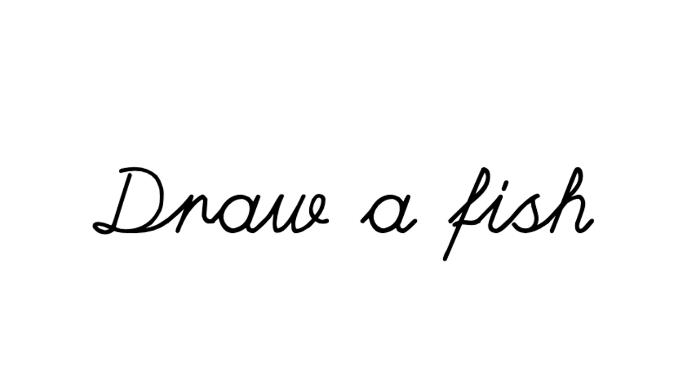I did a four hour recursive livestream.
I lost my voice on that livestream.
I had an extremely busy three weeks.
I gave a talk about make real in Middlesbrough.
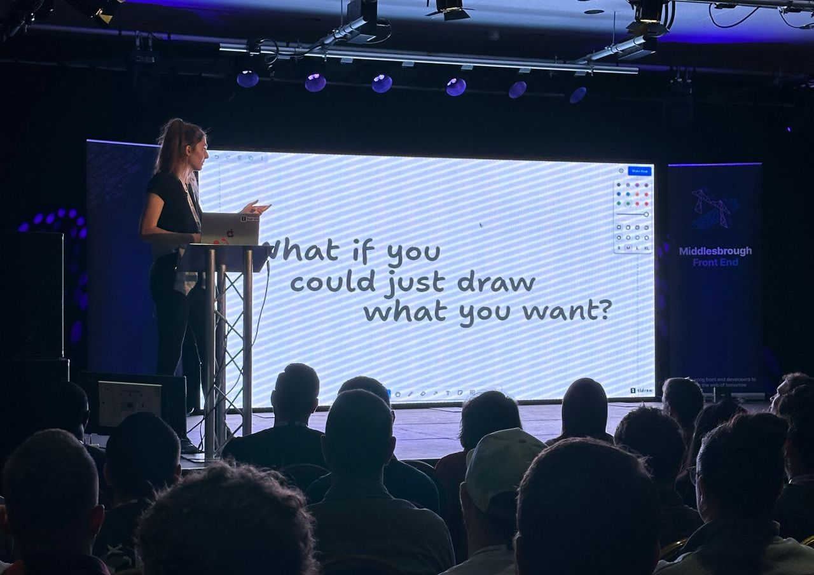We built a canvas calculator at tldraw.
I gave a keynote about make real in New York.
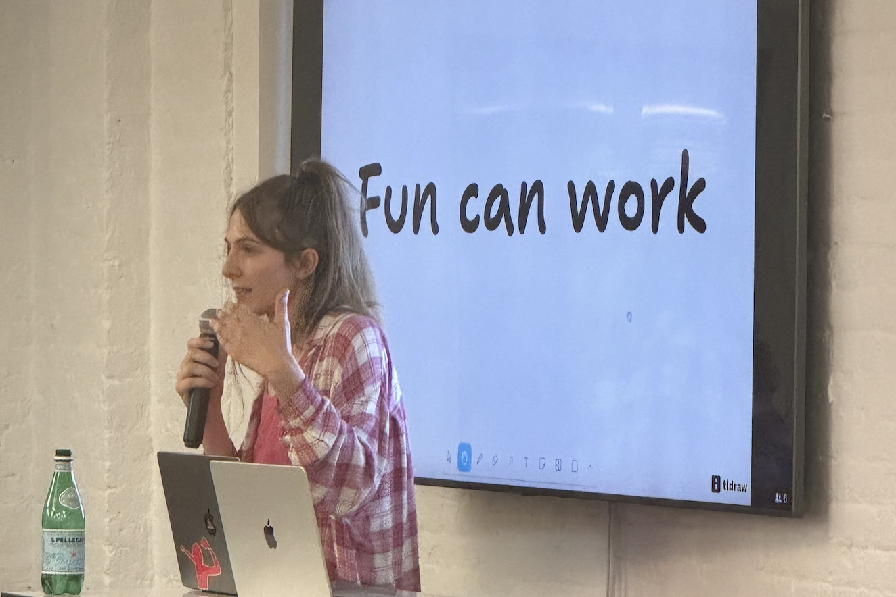I gave a hallway track talk about emotions in New York.
I helped to organise a London creative coding meetup. (I hardly did anything).
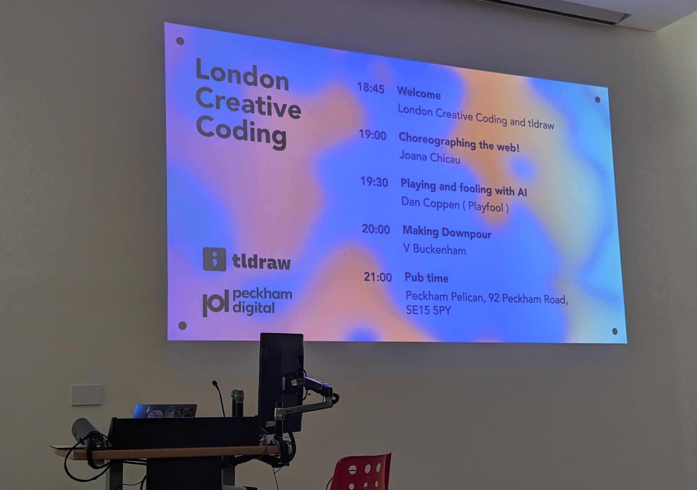I gave a talk about emotions in London.
I gave a guest lecture about our tldraw experiments in London.
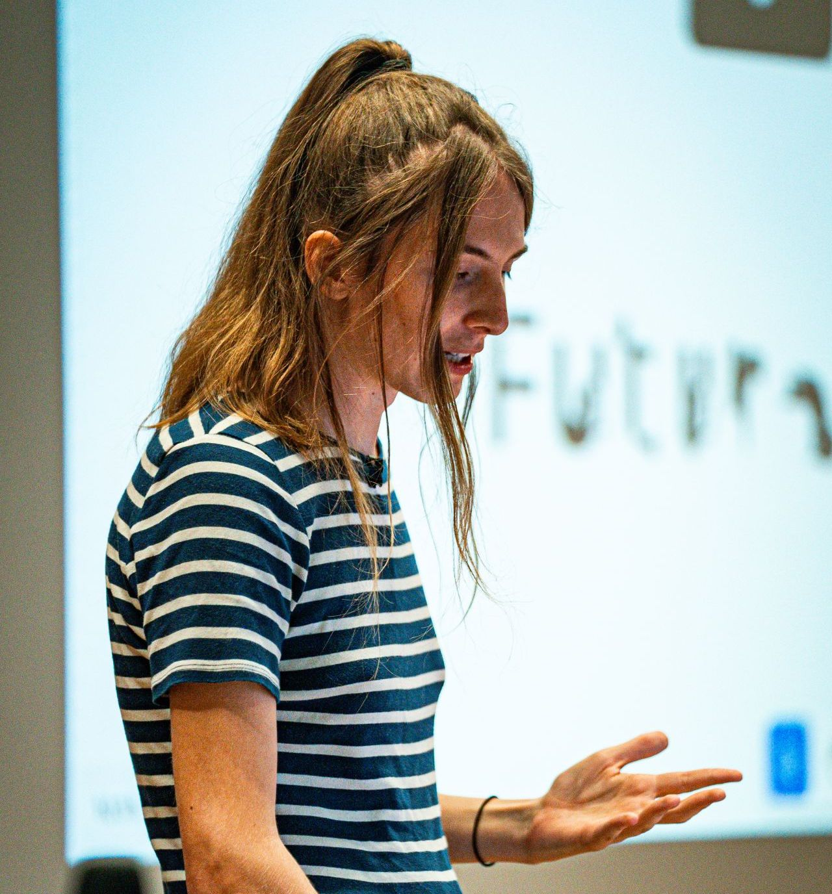I did an eight-and-a-half marathon livestream where I watched all my videos from start to finish.
I questioned my niche status.
I gave an opening keynote about open practice in Leuven.
I gave a keynote about the tadi web in Berlin. I did a shorter version in London.
We founded a computer collective.
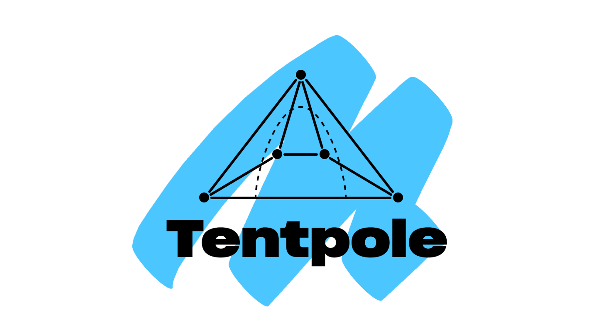We built teach at tldraw and I gave a talk about it in London with my colleague Mini.
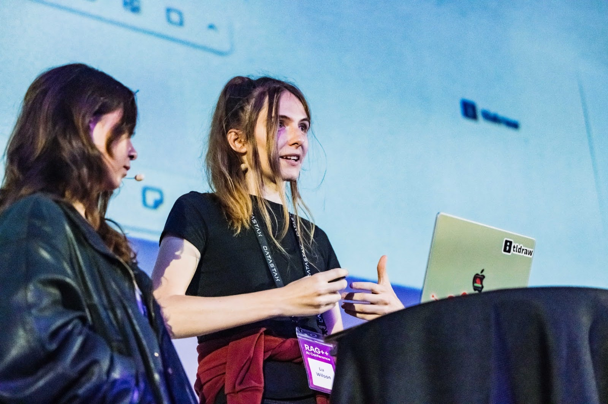I finished arroost and wrote an essay about creative tools.

I gave a talk about my arroost essay in Los Angeles.
I wrote a paper with Dave Ackley about natural code.
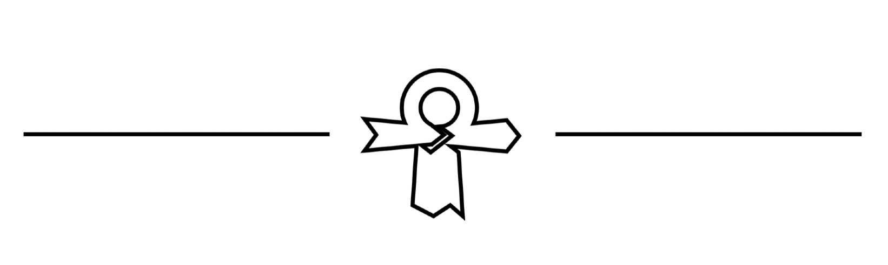I gave a talk about our natural code paper in Los Angeles.
I arranged a short workshop for learning strudel.
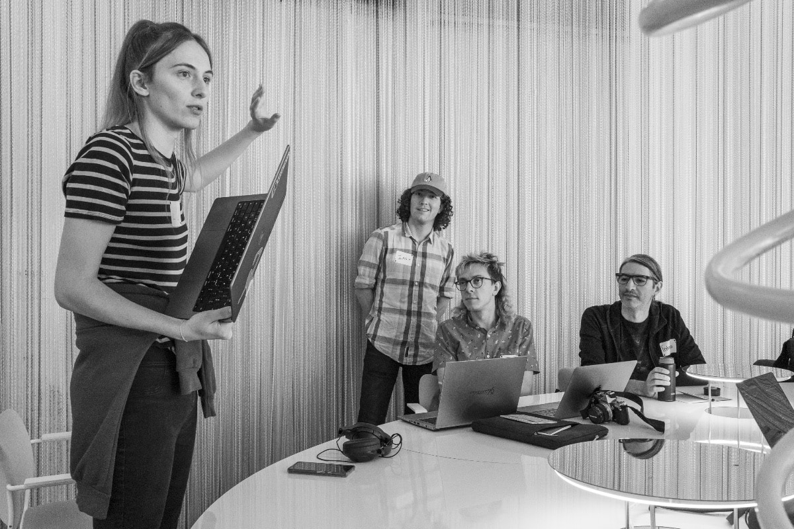We ran the annual meeting for the institute of weirdcoding. This year, we mapped out all computer movements onto a map.
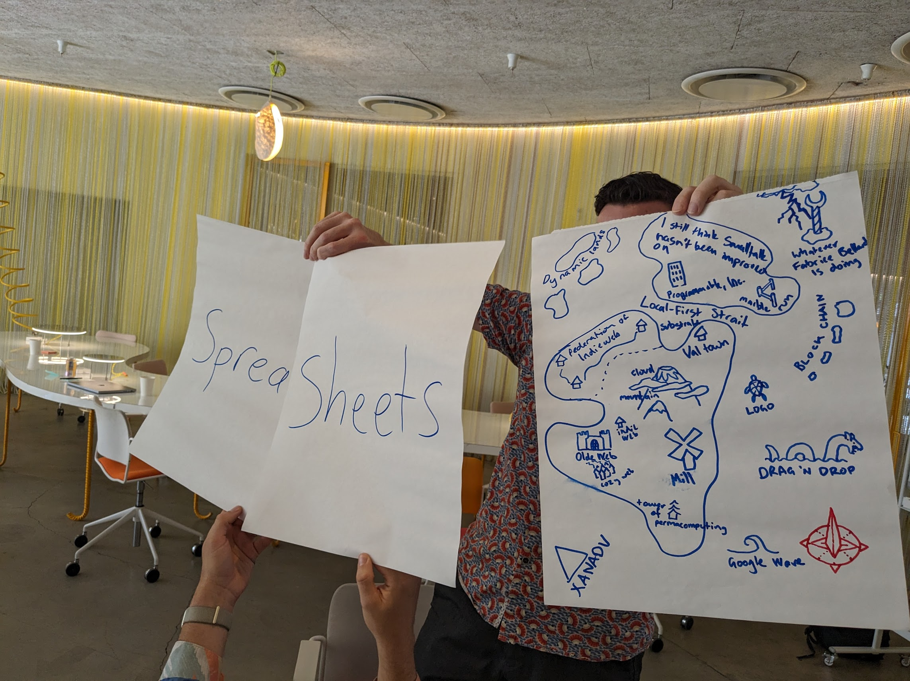I completed my research residency at ink and switch.
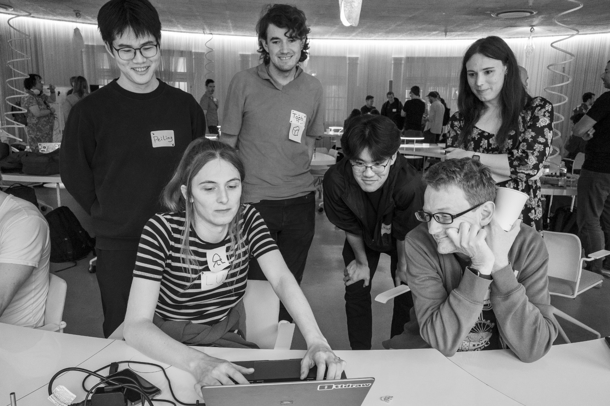I kicked off the logiverse, a distributed social network.
I became part of pastagang.
We built tldraw computer and I gave talks about it in Melbourne, Brisbane and Sydney.
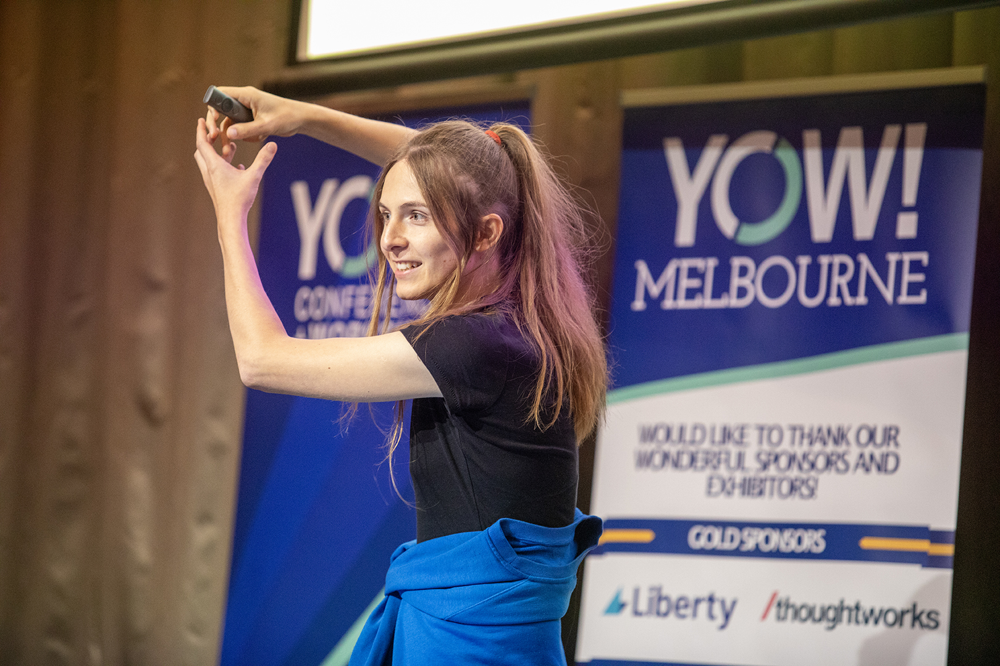I attempted the two two two challenge on a challenge livestream.
Tode is still asleep.
2025 is the year of peace. Much more will happen.
The next sandpond saga video will be TOP 99 WAYS TO MAKE SAND.
peace,
lu x
Back to the wikiblogardenite.